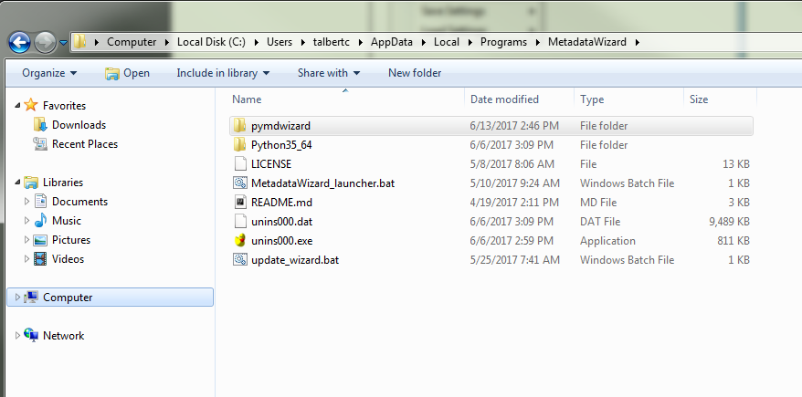
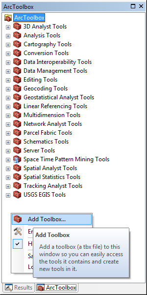
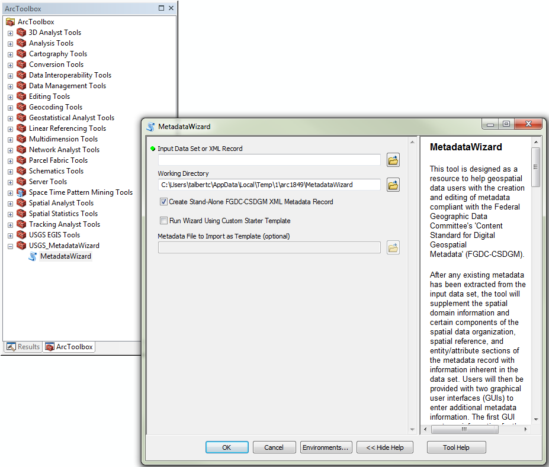

ESRI ArcGIS Toolbox (Windows Only)¶
Installation¶
The original Metadata Wizard tool was only available as an ArcGIS Toolbox. While the dependency on ESRI software has been eliminated with Metadata Wizard 2.0, an ArcToolbox in still included in order to maintain functionality with ESRI proprietary data formats such as file geodatabases, as well as to accommodate users who prefer to use to tool in ArcGIS. Users who want to access the tool in this manner need to manually add the Metadata Wizard 2.0 toolbox to their ArcToolbox. In order to run the ArcToolbox, ArcGIS Desktop will need to be installed. The toolbox is compatible with all 10.x versions.
Find the Metadata Wizard installation directory. The default installtion directory is here:
C:\Users\***YourUserNameHere***\AppData\Local\Programs\MetadataWizard
if elevated privileges (administrative) were used for installation:
C:\Program Files\MetadataWizard
Note that the ‘AppData’ directory in this path is hidden by default, the path will either need to be manually typed into the folder path window in Windows Explorer or the settings will be to be changed to display these hidden directories.

- Start ArcMap or ArcCatalog and open the ArcToolbox pane. By right-clicking in the white space of the ArcToolbox pane and clicking ‘Add Toolbox’, users are prompted to navigate to the folder containing the toolbox. This will be in ‘..\pymdwizard\ArcToolbox’ under the folder identified above.

- Once the toolbox is installed, Metadata Wizard 2.0 can be accessed using the previous tool’s ESRI interface. Information on the ESRI interface can be found in the Open File Report for the previous tool.

Additional Features¶
When using the tool from ESRI, some additional geospatial data types (feature classes and other data contained within file geodatabases) are supported for the auto-generation of spatial and entity and attribute information. Also, accessing existing metadata tied to a geospatial dataset, and saving and editing that metadata is facilitated.